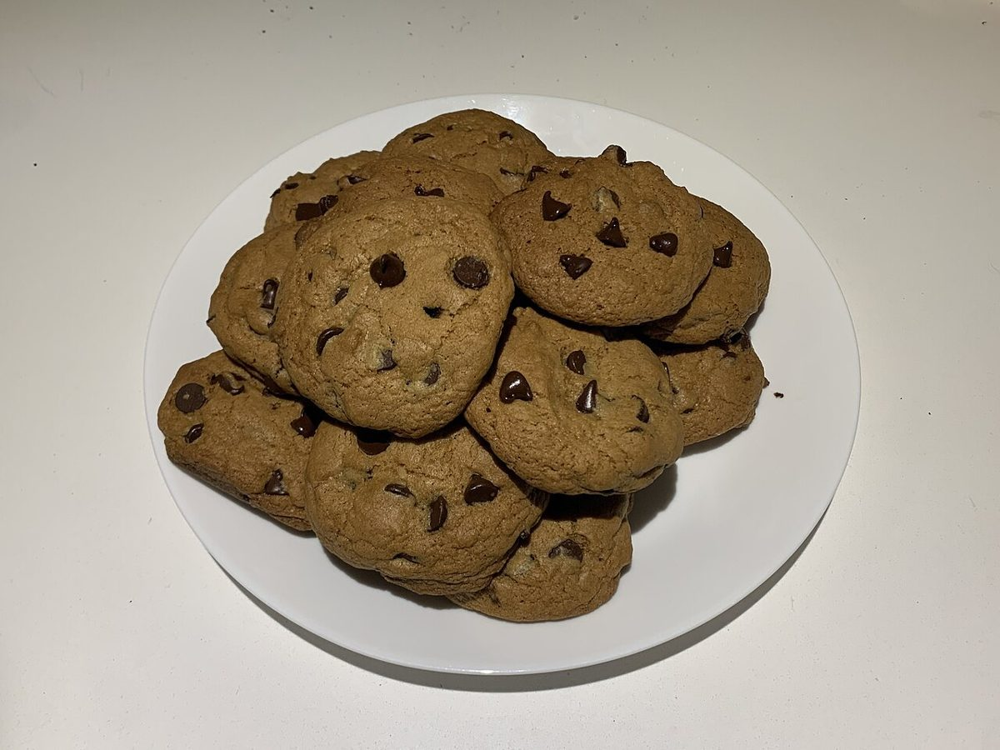
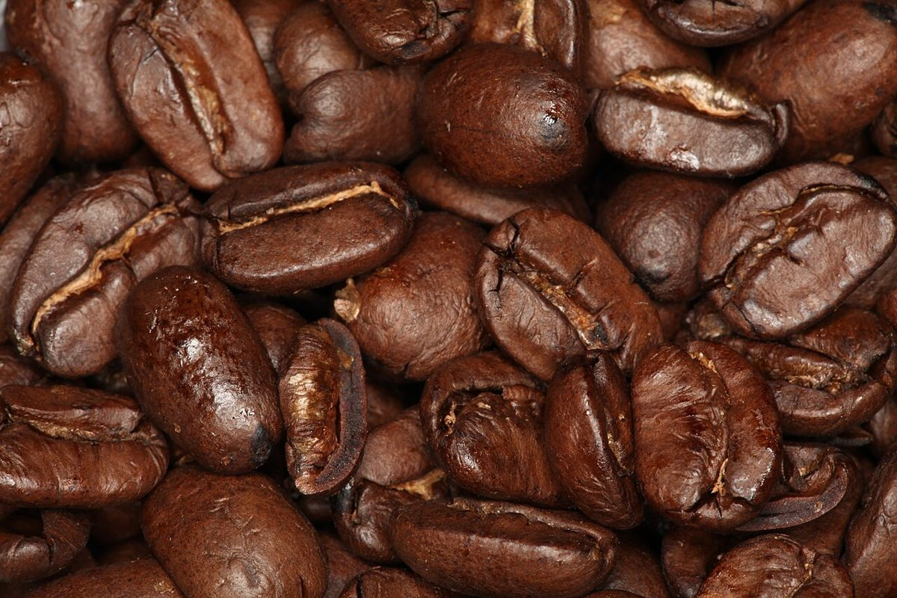
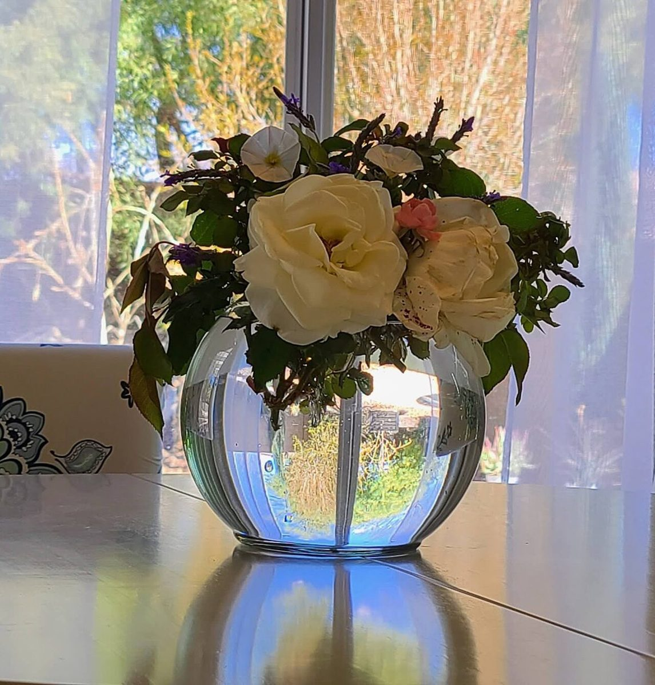

カフェ / 鹿児島県鹿児島市
Sui
鹿児島市泉町のカフェ「Sui」のご案内ページです。営業時間やメニューなど、詳しいことは準備中。まずはInstagramをのぞいてみてください。

S
スタート地点 / 制作側の連想
ビー玉が転がるコースにしてみた
店名「Sui」の意味や由来は分かりません。制作側は、アルファベット3文字の並びが、坂道をころころ進む丸い玉の軌跡のように見えたので、このサイトを「ビー玉のコース」に見立てました。スタートからゴールまで、玉が通るのは三つの分岐だけ。お店の理念や由来とは無関係の、制作側の連想です。
u
分岐1 / まるいもの(イメージ)
丸いものを三つ並べて
写真はお店のものではなく、国外または撮影地不明のフリー素材です。提供内容を示すものではありません。



i
分岐2 / ご案内(確認できたものだけ)
お店のこと
| 所在地 | 〒892-0822 鹿児島県鹿児島市泉町1-8 |
|---|---|
| 電話 | なし |
| 営業時間 | 準備中 |
| 定休日 | 準備中 |
| ご予約 | 準備中 |
| 駐車場 | 準備中 |
| SNS | Instagram @sui_tomaru5 |